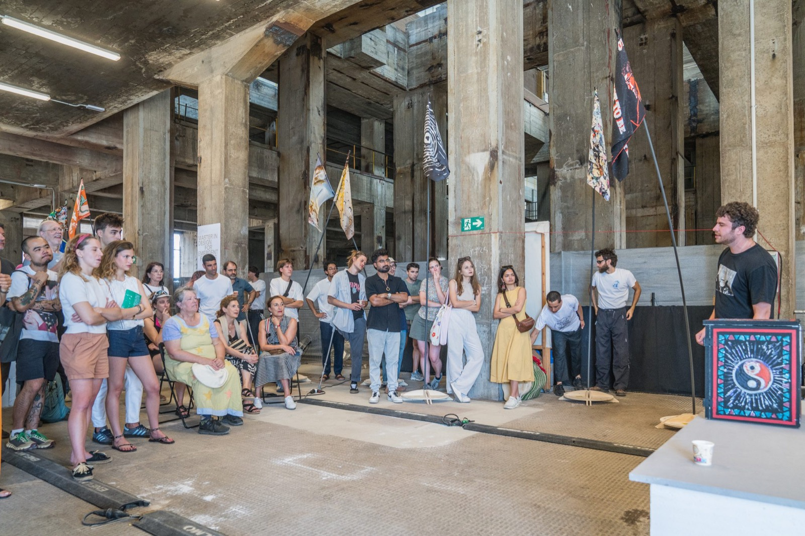
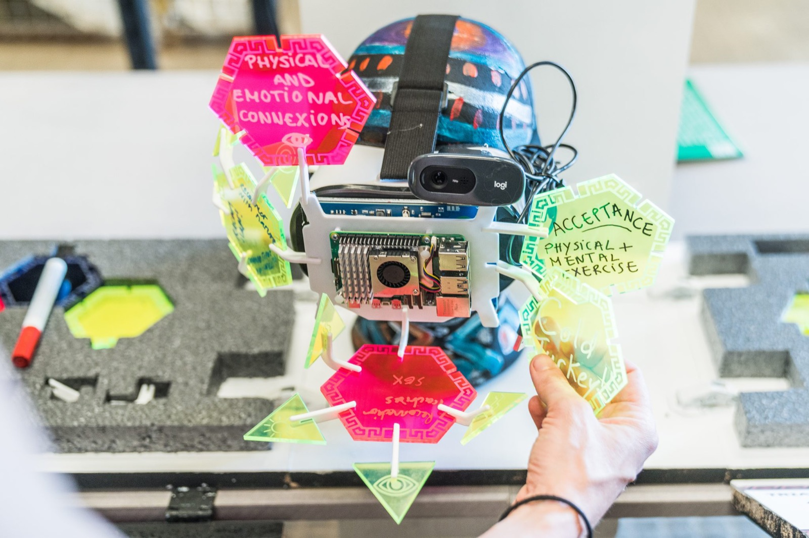
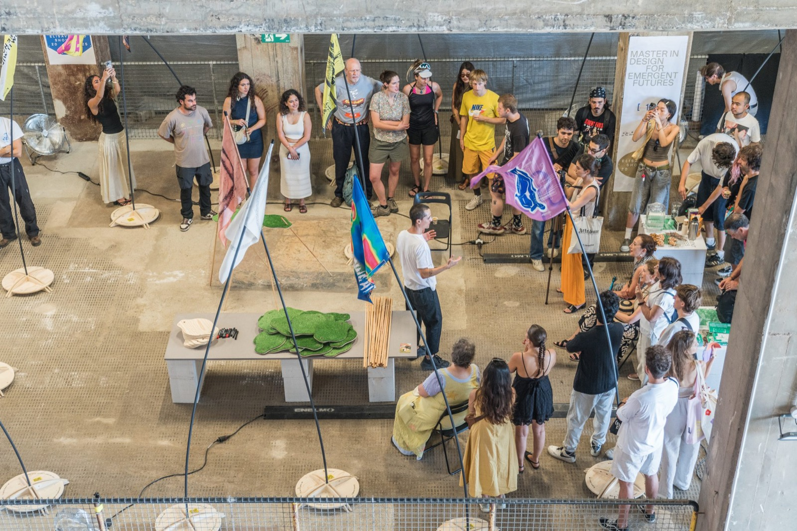
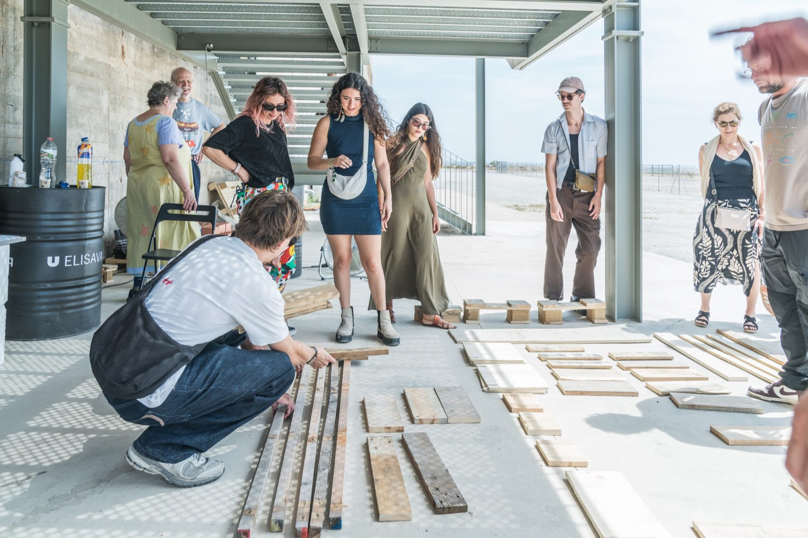
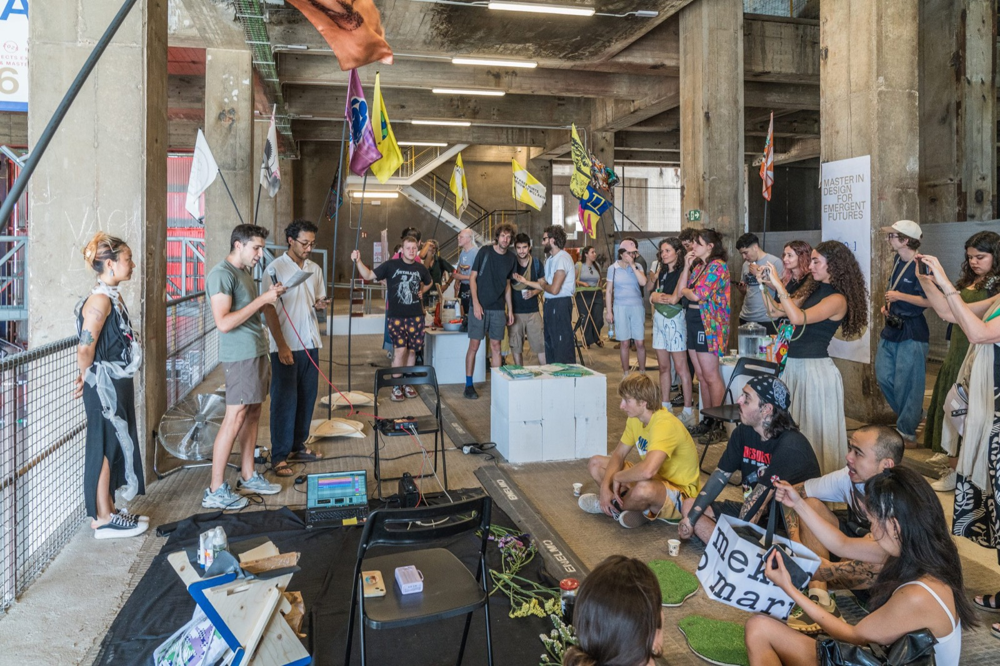
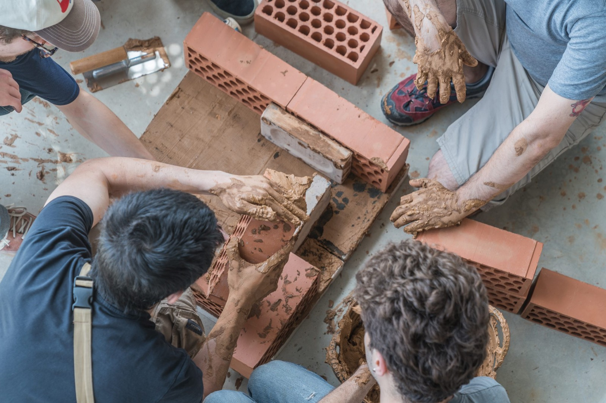

Production and coordination of the MDEF Festival at Les Tres Xemeneies, Barcelona, a public exhibition showcasing the final projects of the Design for Emergent Futures Master's programme. Coordinated thematic clusters, supported communication between students, faculty and production teams, contributed to the development of the festival identity, and oversaw the organization of exhibition spaces, presentation schedules and production workflows to ensure a coherent visitor experience.
The class was divided into thematic clusters based on the different areas of research explored through the projects. The exhibition schedule was structured around these clusters, with the timing of each presentation adapted to the spatial requirements and duration of each project, creating a coherent flow throughout the exhibition.
To create a unified visual language across the different projects, each student designed a personal flag connected to their work. These were produced alongside individual display bases featuring the student's name, project title and a QR code linking to the project.






Photography by Ardila and Ramon Prat